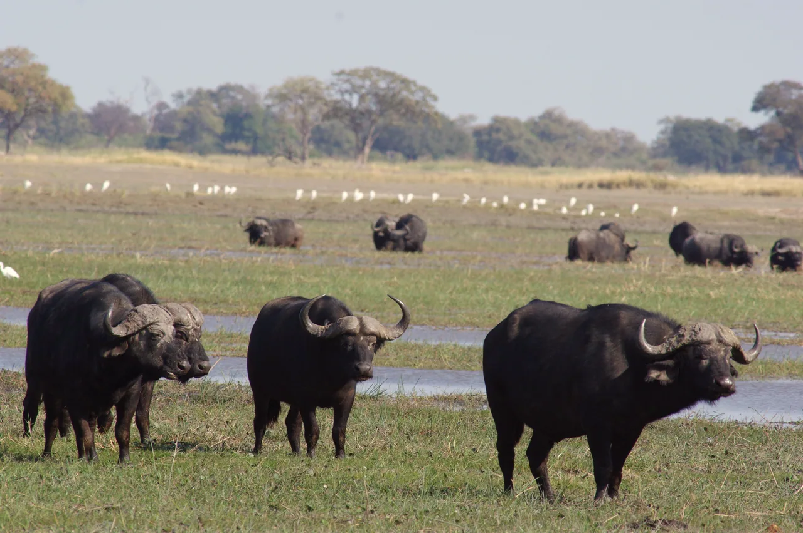
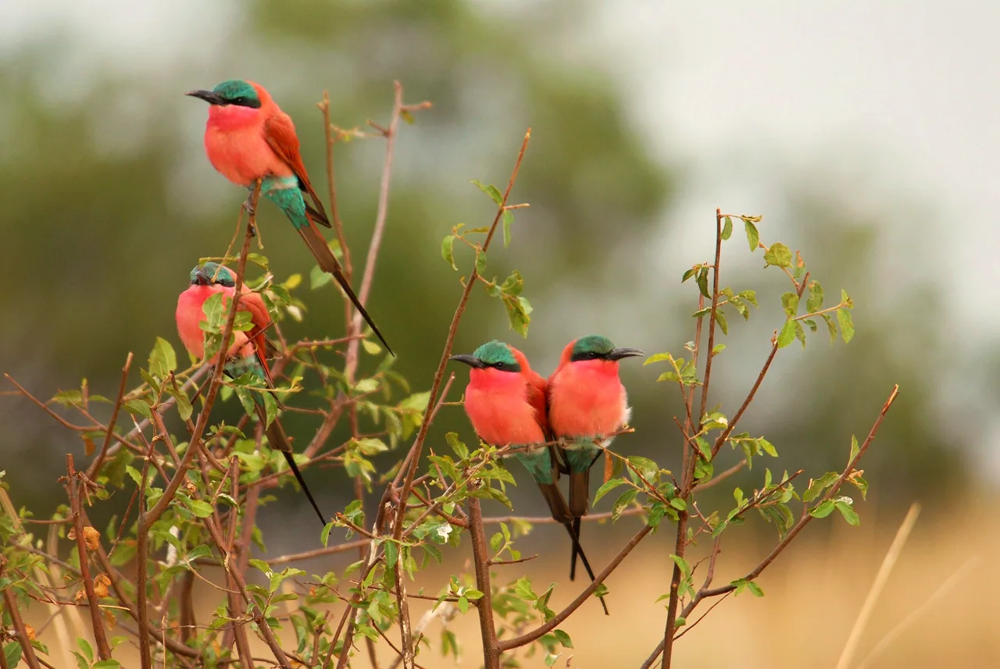
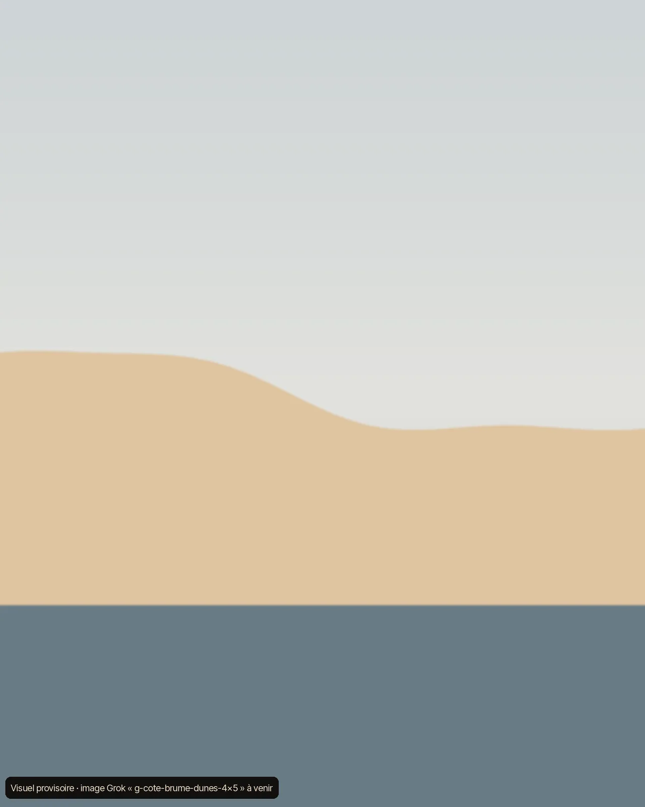
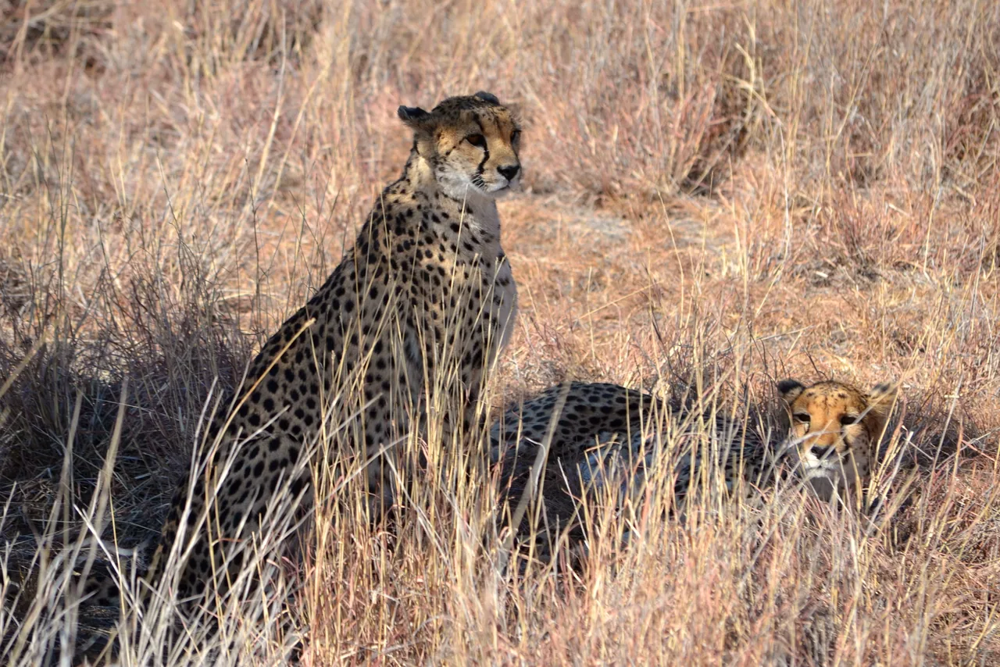
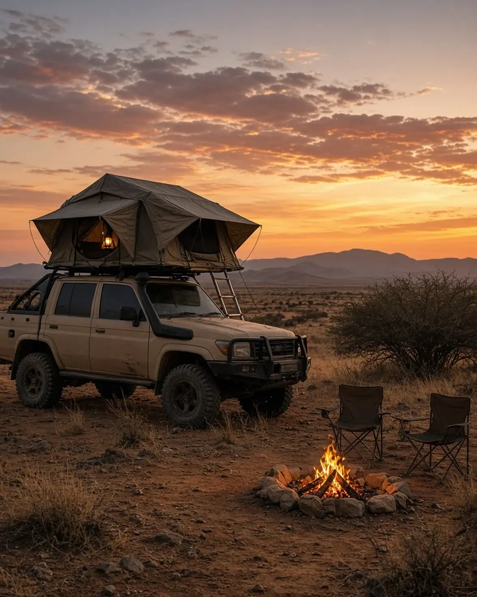
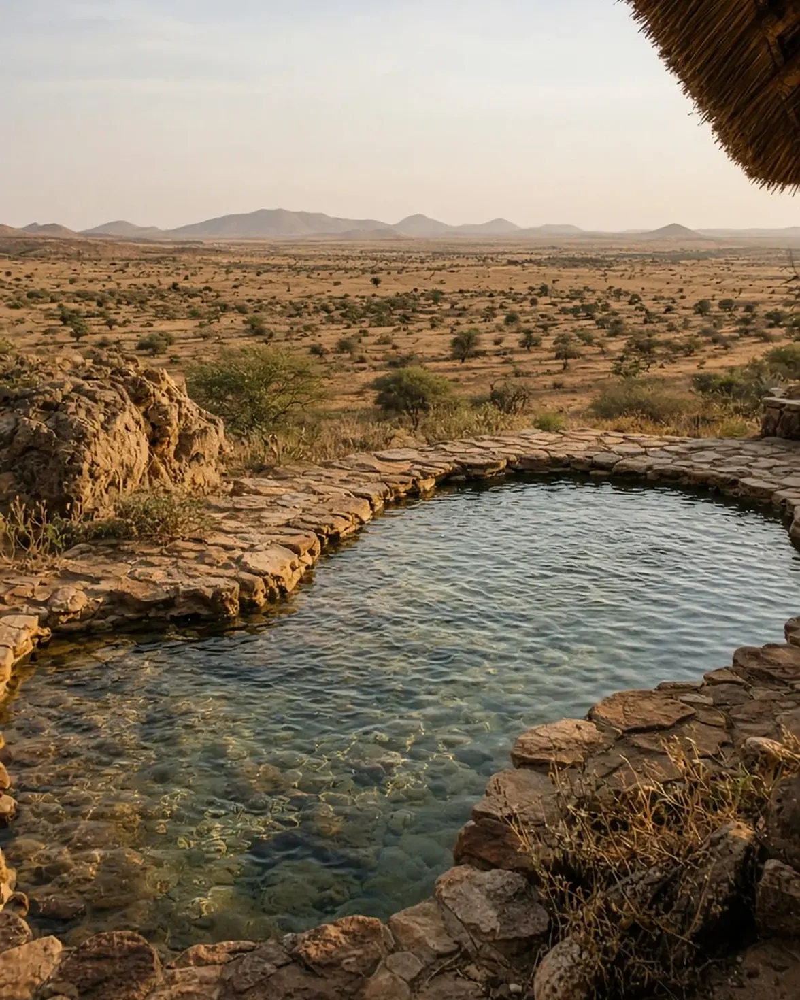

De l’océan au Caprivi
Découverte faune et paysages
Un séjour de 14 jours en autotour : vous conduisez, nous organisons tout. De la côte atlantique au fleuve Okavango, en passant par le Damaraland et le parc d’Etosha, le parcours est pensé pour la nature et l’observation des animaux.
Un séjour de 14 jours guidé de bout en bout : un chauffeur-guide conduit et vous accompagne tout au long du voyage. De la côte atlantique au fleuve Okavango, en passant par le Damaraland et le parc d’Etosha, le parcours est pensé pour la nature et l’observation des animaux.
Idéal en saison sèche, de mai à octobre. Départs d’avril à fin octobre 2027, dates libres.


Jour par jour
Faites défiler : la trace avance sur la carte, étape après étape, de Windhoek au Caprivi et retour.
Carte illustrative, positions approximatives.
-
Jour01
Arrivée à Windhoek
Prise en charge du 4x4 équipé à l’aéroport international. Première nuit en dur à Okahandja, à une heure de Windhoek.

-
Jour02
Vers Swakopmund
Route goudronnée à travers le désert du Namib (4 h). Installation dans un appartement tout équipé près de l’océan et du centre-ville. Courses, balade sur la côte, restaurants et food trucks.

-
Jour03
Sortie en mer à Walvis Bay
Minibus jusqu’à Walvis Bay et sortie en bateau à la rencontre des otaries à fourrure, dauphins et pélicans, avec repas léger à bord. Après-midi libre : dunes ou ville. Nuit à l’appartement.

-
Jour04
Le Brandberg
Départ matinal vers le Damaraland via Uis, jusqu’au pied du Brandberg, point culminant de la Namibie. Paysages et faune locale, dont les éléphants du désert. Nuit en camping équipé avec restaurant et bar.

-
Jour05
Entrée dans Etosha
Route vers le parc d’Etosha, arrivée à Okaukuejo avant la nuit. Observation de la faune au point d’eau, un incontournable en saison sèche. Nuit en camping dans le parc.

-
Jour06
Traversée d’Etosha
D’Okaukuejo à Namutoni par les pistes : félins, éléphants, zèbres, gnous, springboks, oryx, impalas, koudous, girafes… Nuit en camping à Namutoni.

-
Jour07
Rundu et l’Okavango
Route vers Rundu via Grootfontein. Nuit en lodge sur les rives du fleuve.

-
Jour08
Divundu, porte du Caprivi
Visite possible de la réserve de Mahango en route : début du delta, faune exceptionnelle, loin de la foule d’Etosha. Nuit en camping dans un lodge au bord du fleuve (bungalow en option), avec activités sur place : bateau, pêche.
-
Jour09
Bwabwata et Mahango
Matin dans la Buffalo Core Area du parc national de Bwabwata, soir dans la réserve de Mahango jusqu’à la frontière du Botswana. Partez tôt et rentrez tard pour les fauves, buffles et éléphants. Nuit au lodge (bungalow en option).

-
Jour10
Roy’s Camp
Début du retour vers le sud par les rives du fleuve, départ au plus tard à midi. Nuit à Roy’s Camp, camping avec bar et restaurant.

-
Jour11
Otjiwarongo
Balade à pied à Roy’s Camp ou repos jusqu’à midi, puis route vers Otjiwarongo. Nuit en dur à l’hôtel, avec piscine.

-
Jour12
Le Waterberg
Départ à la mi-journée pour le parc du Waterberg. Nuit en camping (bungalow en option).

-
Jour13
Le plateau du Waterberg
Randonnée matinale jusqu’au plateau ou repos à la piscine. L’après-midi, visite du parc avec les rangers (en option) ou détente au camp Bernabé de la Bat.
-
Jour14
Retour à Windhoek
Route vers la capitale, restitution du véhicule vers 15 h au plus tard et transfert à l’aéroport pour votre vol du soir.
Inclus, non inclus
Inclus
Besoin d’un guide francophone ? Nous pouvons l’organiser sur demande.
Non inclus
- Les vols Europe – Windhoek
- Le visa touristique
- La nourriture
- Le carburant
- Les entrées des parcs
- Les options
Les options peuvent être ajoutées à la demande et figurent alors dans votre devis. Nous pouvons vous aider à estimer votre budget sur place.
 Tentes de toit pour 4
5 places
Frigo
Camping et cuisine
Tentes de toit pour 4
5 places
Frigo
Camping et cuisine
Toyota Hilux, tout équipé
Vous récupérez à l’aéroport de Windhoek un Toyota Hilux 4x4 diesel entièrement équipé : tentes de toit pour 4 personnes (5 places), frigo, matériel de camping et de cuisine.
Vous êtes accueillis à l’aéroport de Windhoek par votre chauffeur-guide, au volant d’un Toyota Hilux 4x4 diesel entièrement équipé : tentes de toit pour 4 personnes (5 places), frigo, matériel de camping et de cuisine.

Sur le terrain
Cinq Namibie en un voyage

Assistance du premier au dernier jour
Un numéro dédié joignable sur WhatsApp : en cas de panne, de retard ou de question sur la route, une personne de notre équipe vous répond en français, et vous aide à ajuster l’itinéraire si besoin.
Votre chauffeur-guide est à vos côtés, et notre équipe reste joignable tout au long du voyage pour ajuster l’itinéraire si besoin.